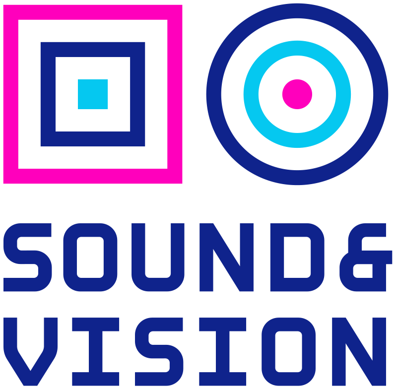

What will we do?
On 19-21 September Storytellers United organises Story Jam: New Neighbours, in cooperation with the Netherlands Institute for Sound & Vision and the Netherlands Film Festival. During three days, you work together in multidisciplinary teams under the guidance of coaches on new intercultural story prototypes.
The stories we will be developing are:
- Intercultural: developed with new Dutch people about the added value of cultural cross-pollination.
- Interdisciplinary: told from the various expertises that team members bring together.
- Innovative: experimental in the application of new technology and media for storytelling.
Each prototype casts a different light on the multicultural society of the Netherlands and uses the medium that best suits the makers and their story. Projects can for example take the form of a web experience, but also be VR, performance, app or installation. After three days of working together, the teams will share their results publicly during the Netherlands Film Festival.
With whom?
We warmly invite creatives of all professional backgrounds with an interest in innovative forms of storytelling to take part. Perhaps you do photography, develop websites, produce podcasts, make theatre, are into data visualisation, create immersive experiences in VR or AR, excel at designing user interfaces or you enjoy editing videos for online platforms. Whatever experience you bring, you certainly have an open mind and enjoy collaborating across disciplines.
We especially encourage you to join if you have moved to the Netherlands from another country. With this Story Jam we want to build on the unique perspectives from people who are new to this country and celebrate intercultural collaboration, experiences and stories.
Why now?
Influenced by migratory flows, including wars, political unrest and climate crises, Dutch society is becoming increasingly diverse. Story Jam: New Neighbours focuses on new stories from these multicultural communities and the social and economic value they bring to the table. How can we support each other and what can these connections and collaborations bring? How can we celebrate social and cultural richness? What can different backgrounds learn from each other? And how can intercultural stories help?
With this Story Jam, we want to challenge stereotypes and expose commonly held myths, put migrants' voices at the centre of discussions about migration and deliver innovative messages to promote the integration of Dutch newcovers into local communities.
Read more background about the Story Jam and the New Neighbours theme.
In short
üí™ Make social impact with stories that connect, at the intersection of storytelling and technology.
üé® Collaborate with storytellers from different disciplines and cultural backgrounds.
üöÄ Develop innovative stories under healthy time pressure, with inspiring input and professional guidance.
üìç Where?
IMPAKT - Centre for Media Culture
Utrecht, the Netherlands
üìÖ When?
Story Jam: 19 - 21 September, three full days, more details to follow.
Kick off event: early September (TBC) @ the Netherlands Institute for Sound and Vision in Hilversum
Public presentation of results: Saturday September the 24th.
Take part
Would you like to join? Register before 22 August using the registration form. The selection of participants will be announced no later than 5 September. Participation is free of charge, catering will be provided.
Teams will be formed to ensure a variety of skills, based on the information submitted in applications. Applications are sent on an individual basis. In case you want to apply with a team, please clearly mention this and include all team members in the application form.
Apply now
Mentors and Speakers
During the Story Jam, you are supported by a team of mentors who bring a diverse range of experience and expertise. More mentors will be announced in the run-up to the event.

Anna Desponds
Podcaster & researcher
An ambassador of the Storytellers United community, Anna is a podcaster and researcher, combining a career as a curator in the audiovisual industries with interest in intercultural studies. She holds an MA in interdisciplinary humanities and has been designing award-winning audience experiences at the intersection of audiovisual arts and innovation for almost 15 years. She has collaborated with most important Polish media outlets, brought multimedia storytelling experiences to life, and facilitated over a hundred talks, Q&As, and workshops in physical and online settings.
As a researcher at the Berlin-based boutique consulting agency The Catalysts, Anna helps conceive industry programs for leading audiovisual institutions. She's also an intercultural educator focusing on local history narratives. Anna likes to create meaningful connections between remote concepts, as well as between people. As a child, she wanted to be an anthropologist and her dream came true. Her creative medium of choice is food.
Sahand Sahebdivani
Sahand was born in Iran and raised in the Netherlands where he studied storytelling, screenplay writing and music. Since 2004 he operates the Mezrab Cultural Centre, a renowned centre for storytelling and other arts. He’s worked both in Dutch and Persian language media as a writer and programme maker on a variety of cultural, social and political issues. When he’s not in Amsterdam he’s touring the world with his band, his story shows and/or his storytelling workshops.
Klasien van de Zandschulp
Klasien is an Amsterdam-based interactive artist and creative director at studio affect lab. She designs story-based and participatory experiences, blending digital/physical and online/offline interactions. Her work explores sensory design, embodiment, rituals, augmented realities, human interaction and (radical) thoughts around our daily technology consumption.
In collaboration with Emilie Baltz she created the futuristic cooking show called 'EAT TECH KITCHEN' (winner IDFA Doclab Immersive Non-Fiction Award 2018) and in collaboration with Natalie Dixon she created 'Good Neighbours': an interactive performance about intimate surveillance and the micro-politics of neighbourhoods (winner Dutch Design Award 2022, nominated for Gouden Kalf Digitale Cultuur 2022). During the recent lockdown she created 'DISTANCE DISCO', a virtual dancefloor for techno romances!
About the organisers
Storytellers United

Storytellers United is an international network of media makers, technologists and designers interested in innovative forms of storytelling. Since 2013, SU has partnered with film festivals, universities and broadcasters to explore the future of storytelling in hands-on, multi-disciplinary sprints. These 'Story Jams' mix story, code and creativity with fun and community. Hailing from different time zones and professional backgrounds, members enjoy sharing via community channels: from upcoming events to ongoing projects and from useful tools to exciting opportunities.
Netherlands Institute for Sound & Vision

The Netherlands Institute for Sound & Vision in Hilversum manages one of the world's largest digitised media archives for radio, television, YouTube videos, objects, written press, podcasts and games. They preserve the daily growing media collection as heritage for eternity. At the same time, they closely follow all movements in the global media landscape, including developments in the online and digital domain.
The starting point for all activities of Sound and Vision is the importance of free media for our democracy, to contribute to an open, free, inclusive and media-minded society. They illuminate current affairs from a media-historical perspective and show how you yourself can use media to tell your story, but they also show the influence of media on your personal life and on society. They do this in various ways: online and in the museums in Hilversum and The Hague, but also at partner locations. At schools, they offer a wide range of workshops on media literacy and they also stimulate academic and journalistic research. As an organisation or in cooperation with universities, festivals, organisations at home and abroad as well as relevant companies, they organise countless public activities, workshops, debates and lectures for young and old - and now also this Story Jam.
Nederlands Film Festival

The Netherlands Film Festival (NFF) is involved in this project as a platform. One of its pillars is the Digital Culture Programme. Like SU and parts of Beeld & Geluid, this department focuses on the development of alternative forms of Storytelling, in which technology and new media play a role. It takes a critical look at the social impact and possibilities of technology and the opportunities this offers for new forms of storytelling. The target groups are festival visitors and filmmakers interested in innovation, as well as digital artists engaged in narrative productions.
By providing a venue for this Story Jam, NFF wants to give a new impulse to the professional field in the Netherlands. It wants to be an inspiring platform and stage for up-and-coming talent and inspire new makers by bringing in national and international experts and opening up new networks.
Supported by
Story Jam New Neighbours is made possible by a grant from the Creative Industries Fund NL.